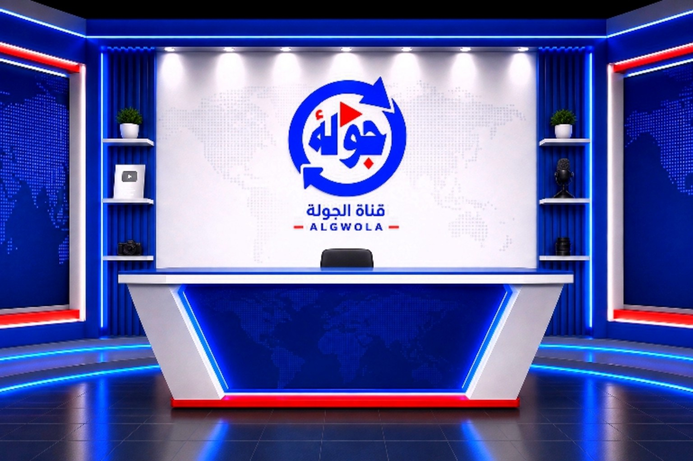

منصة جولة
حيث التغطية والتوثيق
خبر من الميدان، صورة تحفظ الذاكرة، وتقرير يضع الحدث في سياقه.
ابدأ الجولة ←
خبر من الميدان، صورة تحفظ الذاكرة، وتقرير يضع الحدث في سياقه.
ابدأ الجولة ←قناة جولة — حيث التغطية والتوثيق. صوت العودة وحكايات المكان. تهدف القناة إلى توثيق وسرد وإحياء قصص العودة إلى الوطن؛ عبر حلقات ميدانية، لقاءات مع العائلات والناشطين، وتقارير ثقافية.